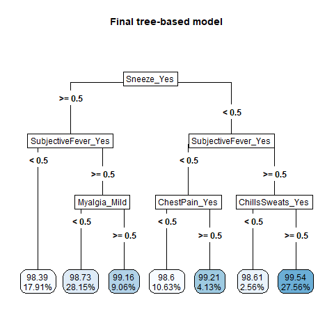
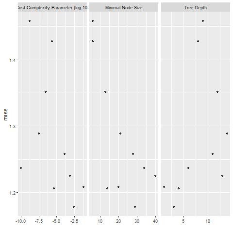
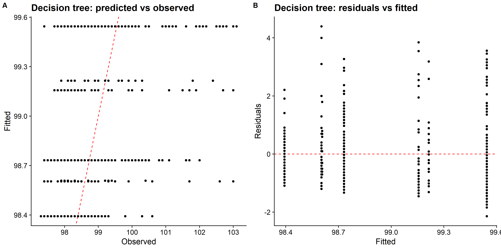
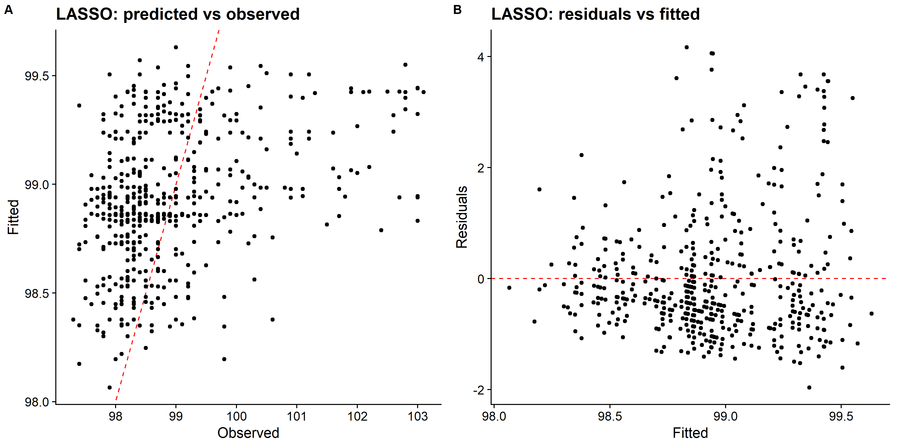
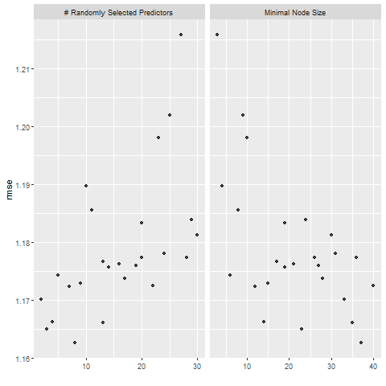
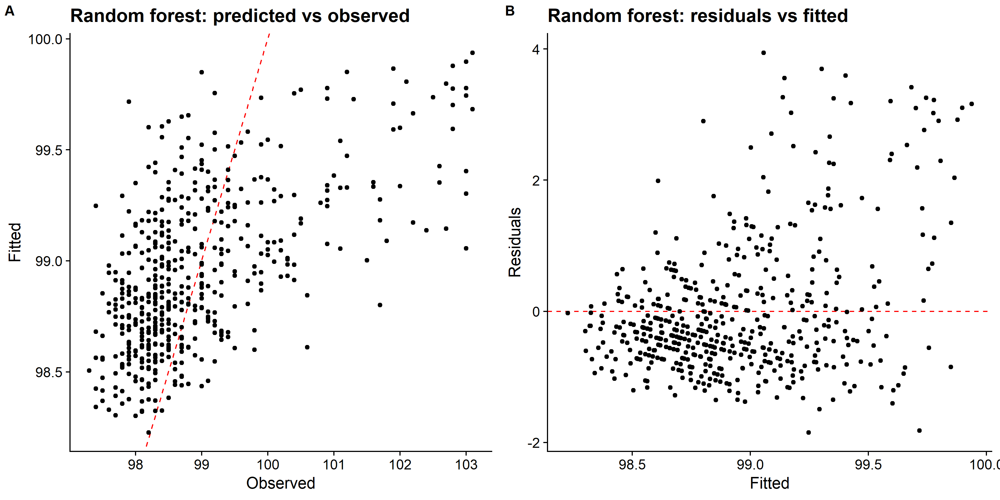

Tzu-Chun’s Tidy Tuesday Exercise 2
For this exercise, I used a influenza data provided by Dr. Handel to fit a tree-based, a LASSO model and a random forest,then compare their model performances and choose one model that best fit the data based on the tuning process. The purpose of the analysis is to create, process and validate a predictive model for predicting future outcome, which is body temperature in this exercise.
Load needed packages
Pre-processing
## 'data.frame': 730 obs. of 32 variables:
## $ SwollenLymphNodes: Factor w/ 2 levels "No","Yes": 2 2 2 2 2 1 1 1 2 1 ...
## $ ChestCongestion : Factor w/ 2 levels "No","Yes": 1 2 2 2 1 1 1 2 2 2 ...
## $ ChillsSweats : Factor w/ 2 levels "No","Yes": 1 1 2 2 2 2 2 2 2 1 ...
## $ NasalCongestion : Factor w/ 2 levels "No","Yes": 1 2 2 2 1 1 1 2 2 2 ...
## $ CoughYN : Factor w/ 2 levels "No","Yes": 2 2 1 2 1 2 2 2 2 2 ...
## $ Sneeze : Factor w/ 2 levels "No","Yes": 1 1 2 2 1 2 1 2 1 1 ...
## $ Fatigue : Factor w/ 2 levels "No","Yes": 2 2 2 2 2 2 2 2 2 2 ...
## $ SubjectiveFever : Factor w/ 2 levels "No","Yes": 2 2 2 2 2 2 2 2 2 1 ...
## $ Headache : Factor w/ 2 levels "No","Yes": 2 2 2 2 2 2 1 2 2 2 ...
## $ Weakness : Factor w/ 4 levels "None","Mild",..: 2 4 4 4 3 3 2 4 3 3 ...
## $ WeaknessYN : Factor w/ 2 levels "No","Yes": 2 2 2 2 2 2 2 2 2 2 ...
## $ CoughIntensity : Factor w/ 4 levels "None","Mild",..: 4 4 2 3 1 3 4 3 3 3 ...
## $ CoughYN2 : Factor w/ 2 levels "No","Yes": 2 2 2 2 1 2 2 2 2 2 ...
## $ Myalgia : Factor w/ 4 levels "None","Mild",..: 2 4 4 4 2 3 2 4 3 2 ...
## $ MyalgiaYN : Factor w/ 2 levels "No","Yes": 2 2 2 2 2 2 2 2 2 2 ...
## $ RunnyNose : Factor w/ 2 levels "No","Yes": 1 1 2 2 1 1 2 2 2 2 ...
## $ AbPain : Factor w/ 2 levels "No","Yes": 1 1 2 1 1 1 1 1 1 1 ...
## $ ChestPain : Factor w/ 2 levels "No","Yes": 1 1 2 1 1 2 2 1 1 1 ...
## $ Diarrhea : Factor w/ 2 levels "No","Yes": 1 1 1 1 1 2 1 1 1 1 ...
## $ EyePn : Factor w/ 2 levels "No","Yes": 1 1 1 1 2 1 1 1 1 1 ...
## $ Insomnia : Factor w/ 2 levels "No","Yes": 1 1 2 2 2 1 1 2 2 2 ...
## $ ItchyEye : Factor w/ 2 levels "No","Yes": 1 1 1 1 1 1 1 1 1 1 ...
## $ Nausea : Factor w/ 2 levels "No","Yes": 1 1 2 2 2 2 1 1 2 2 ...
## $ EarPn : Factor w/ 2 levels "No","Yes": 1 2 1 2 1 1 1 1 1 1 ...
## $ Hearing : Factor w/ 2 levels "No","Yes": 1 2 1 1 1 1 1 1 1 1 ...
## $ Pharyngitis : Factor w/ 2 levels "No","Yes": 2 2 2 2 2 2 2 1 1 1 ...
## $ Breathless : Factor w/ 2 levels "No","Yes": 1 1 2 1 1 2 1 1 1 2 ...
## $ ToothPn : Factor w/ 2 levels "No","Yes": 1 1 2 1 1 1 1 1 2 1 ...
## $ Vision : Factor w/ 2 levels "No","Yes": 1 1 1 1 1 1 1 1 1 1 ...
## $ Vomit : Factor w/ 2 levels "No","Yes": 1 1 1 1 1 1 2 1 1 1 ...
## $ Wheeze : Factor w/ 2 levels "No","Yes": 1 1 1 2 1 2 1 1 1 1 ...
## $ BodyTemp : num 98.3 100.4 100.8 98.8 100.5 ...
## - attr(*, "na.action")= 'omit' Named int [1:5] 133 243 363 577 585
## ..- attr(*, "names")= chr [1:5] "133" "243" "363" "577" ...## SwollenLymphNodes ChestCongestion ChillsSweats NasalCongestion Sneeze
## No :418 No :323 No :130 No :167 No :339
## Yes:312 Yes:407 Yes:600 Yes:563 Yes:391
##
##
##
##
## Fatigue SubjectiveFever Headache Weakness CoughIntensity
## No : 64 No :230 No :115 None : 49 None : 47
## Yes:666 Yes:500 Yes:615 Mild :223 Mild :154
## Moderate:338 Moderate:357
## Severe :120 Severe :172
##
##
## Myalgia RunnyNose AbPain ChestPain Diarrhea EyePn Insomnia
## None : 79 No :211 No :639 No :497 No :631 No :617 No :315
## Mild :213 Yes:519 Yes: 91 Yes:233 Yes: 99 Yes:113 Yes:415
## Moderate:325
## Severe :113
##
##
## ItchyEye Nausea EarPn Hearing Pharyngitis Breathless ToothPn
## No :551 No :475 No :568 No :700 No :119 No :436 No :565
## Yes:179 Yes:255 Yes:162 Yes: 30 Yes:611 Yes:294 Yes:165
##
##
##
##
## Vision Vomit Wheeze BodyTemp
## No :711 No :652 No :510 Min. : 97.20
## Yes: 19 Yes: 78 Yes:220 1st Qu.: 98.20
## Median : 98.50
## Mean : 98.94
## 3rd Qu.: 99.30
## Max. :103.10Data setup
# Data Splitting------------------------------------------------------
#set seed to fix random numbers
set.seed(123)
# put 0.7 of data into training set, use BodyTemp as stratification
data_split <- initial_split(dat.clean,
prop = 0.7,
strata = BodyTemp)
# create data frames for training and testing sets
train_data <- training(data_split)
test_data <- testing(data_split)
# create 5-fold cross-validation, 5 times repeated
set.seed(123)
folds <- vfold_cv(train_data, v = 5, repeats =5, strata = BodyTemp)
# create recipe fitting BodyTemp to all predictors
rec <- recipes::recipe(BodyTemp ~ ., data = train_data)
# create dummy variable for all predictors
rec_all_pred <- rec %>%
#converts characters or factors
step_dummy(all_nominal()) %>%
#removes indicator variables that only contain a single unique value
step_zv(all_predictors())Null model performance
# fit a linear model
lm_mod <-
linear_reg() %>% set_engine("lm")
# create recipe fitting BodyTemp to all predictors
rec.null <- recipes::recipe(BodyTemp ~ 1, data = train_data)
# create model Workflow
null_workflow <-
workflow() %>%
add_model(lm_mod) %>%
add_recipe(rec.null)
# Preparing the recipe and train the null model
null_fit<-
null_workflow %>%
fit(data = train_data)
# Extracting and tidying the model coefficients
null_fit %>%
extract_fit_parsnip() %>%
tidy()## # A tibble: 1 x 5
## term estimate std.error statistic p.value
## <chr> <dbl> <dbl> <dbl> <dbl>
## 1 (Intercept) 98.9 0.0537 1842. 0### Null model Evaluation
# we will use the RMSE as a metric to assess model performance
# Use a trained workflow to predict section using test data
predict(null_fit, test_data)## # A tibble: 222 x 1
## .pred
## <dbl>
## 1 98.9
## 2 98.9
## 3 98.9
## 4 98.9
## 5 98.9
## 6 98.9
## 7 98.9
## 8 98.9
## 9 98.9
## 10 98.9
## # ... with 212 more rows# include predicted probabilities
null_test_aug <- augment(null_fit, test_data)
# estimate RMSE for test data
rmse_null_test <- null_test_aug %>%
rmse(truth = BodyTemp, .pred)
# evaluate prediction in train data
predict(null_fit, train_data)## # A tibble: 508 x 1
## .pred
## <dbl>
## 1 98.9
## 2 98.9
## 3 98.9
## 4 98.9
## 5 98.9
## 6 98.9
## 7 98.9
## 8 98.9
## 9 98.9
## 10 98.9
## # ... with 498 more rows# include predicted probabilities
null_train_aug <-
augment(null_fit, train_data)
# estimate RMSE for train data
rmse_null_train <- null_train_aug %>%
rmse(truth = BodyTemp, .pred)
rmse_null_train## # A tibble: 1 x 3
## .metric .estimator .estimate
## <chr> <chr> <dbl>
## 1 rmse standard 1.21## # A tibble: 1 x 3
## .metric .estimator .estimate
## <chr> <chr> <dbl>
## 1 rmse standard 1.16Model tuning and fitting
Decision tree
I first followed the tidymodels tutorial for training the model using tree regression method, but I got the error of the "“a correlation computation is required, but ‘estimate’ is constant and has…” when I used dials to search for all tuning combinations to try for each hyperparameter, and the final tree didn’t perform well, and only include sneeze as only predictor. I would like to thank Zane for the inspiration, I used “grid_latin_hypercube” for defining a grid of potential parameter values, and the codes ran without any error.
# model specification
tree_spec <-
decision_tree(
cost_complexity = tune(),
tree_depth = tune(),
min_n = tune() # sets the minimum n to split at any node.
) %>%
set_engine("rpart") %>%
set_mode("regression")
tree_spec## Decision Tree Model Specification (regression)
##
## Main Arguments:
## cost_complexity = tune()
## tree_depth = tune()
## min_n = tune()
##
## Computational engine: rpart# we will train this specification on several re-sampled data
tree_wf <- workflow() %>%
add_model(tree_spec) %>%
add_recipe(rec_all_pred)
# define a grid of potential parameter values using latin hypercube sampling
tree_grid <- grid_latin_hypercube(
cost_complexity(), tree_depth(), min_n(), size = 10
)
# Grid search for parameter values
tree_res <- tree_wf %>%
tune_grid(
resamples = folds,
grid = tree_grid,
metrics = metric_set(rmse),
control = control_grid(verbose = TRUE),
)## Warning: package 'rlang' was built under R version 4.0.5## Warning: package 'vctrs' was built under R version 4.0.5## i Fold1, Repeat1: preprocessor 1/1## v Fold1, Repeat1: preprocessor 1/1## i Fold1, Repeat1: preprocessor 1/1, model 1/10## v Fold1, Repeat1: preprocessor 1/1, model 1/10## i Fold1, Repeat1: preprocessor 1/1, model 1/10 (predictions)## i Fold1, Repeat1: preprocessor 1/1, model 2/10## v Fold1, Repeat1: preprocessor 1/1, model 2/10## i Fold1, Repeat1: preprocessor 1/1, model 2/10 (predictions)## i Fold1, Repeat1: preprocessor 1/1, model 3/10## v Fold1, Repeat1: preprocessor 1/1, model 3/10## i Fold1, Repeat1: preprocessor 1/1, model 3/10 (predictions)## i Fold1, Repeat1: preprocessor 1/1, model 4/10## v Fold1, Repeat1: preprocessor 1/1, model 4/10## i Fold1, Repeat1: preprocessor 1/1, model 4/10 (predictions)## i Fold1, Repeat1: preprocessor 1/1, model 5/10## v Fold1, Repeat1: preprocessor 1/1, model 5/10## i Fold1, Repeat1: preprocessor 1/1, model 5/10 (predictions)## i Fold1, Repeat1: preprocessor 1/1, model 6/10## v Fold1, Repeat1: preprocessor 1/1, model 6/10## i Fold1, Repeat1: preprocessor 1/1, model 6/10 (predictions)## i Fold1, Repeat1: preprocessor 1/1, model 7/10## v Fold1, Repeat1: preprocessor 1/1, model 7/10## i Fold1, Repeat1: preprocessor 1/1, model 7/10 (predictions)## i Fold1, Repeat1: preprocessor 1/1, model 8/10## v Fold1, Repeat1: preprocessor 1/1, model 8/10## i Fold1, Repeat1: preprocessor 1/1, model 8/10 (predictions)## i Fold1, Repeat1: preprocessor 1/1, model 9/10## v Fold1, Repeat1: preprocessor 1/1, model 9/10## i Fold1, Repeat1: preprocessor 1/1, model 9/10 (predictions)## i Fold1, Repeat1: preprocessor 1/1, model 10/10## v Fold1, Repeat1: preprocessor 1/1, model 10/10## i Fold1, Repeat1: preprocessor 1/1, model 10/10 (predictions)## i Fold2, Repeat1: preprocessor 1/1## v Fold2, Repeat1: preprocessor 1/1## i Fold2, Repeat1: preprocessor 1/1, model 1/10## v Fold2, Repeat1: preprocessor 1/1, model 1/10## i Fold2, Repeat1: preprocessor 1/1, model 1/10 (predictions)## i Fold2, Repeat1: preprocessor 1/1, model 2/10## v Fold2, Repeat1: preprocessor 1/1, model 2/10## i Fold2, Repeat1: preprocessor 1/1, model 2/10 (predictions)## i Fold2, Repeat1: preprocessor 1/1, model 3/10## v Fold2, Repeat1: preprocessor 1/1, model 3/10## i Fold2, Repeat1: preprocessor 1/1, model 3/10 (predictions)## i Fold2, Repeat1: preprocessor 1/1, model 4/10## v Fold2, Repeat1: preprocessor 1/1, model 4/10## i Fold2, Repeat1: preprocessor 1/1, model 4/10 (predictions)## i Fold2, Repeat1: preprocessor 1/1, model 5/10## v Fold2, Repeat1: preprocessor 1/1, model 5/10## i Fold2, Repeat1: preprocessor 1/1, model 5/10 (predictions)## i Fold2, Repeat1: preprocessor 1/1, model 6/10## v Fold2, Repeat1: preprocessor 1/1, model 6/10## i Fold2, Repeat1: preprocessor 1/1, model 6/10 (predictions)## i Fold2, Repeat1: preprocessor 1/1, model 7/10## v Fold2, Repeat1: preprocessor 1/1, model 7/10## i Fold2, Repeat1: preprocessor 1/1, model 7/10 (predictions)## i Fold2, Repeat1: preprocessor 1/1, model 8/10## v Fold2, Repeat1: preprocessor 1/1, model 8/10## i Fold2, Repeat1: preprocessor 1/1, model 8/10 (predictions)## i Fold2, Repeat1: preprocessor 1/1, model 9/10## v Fold2, Repeat1: preprocessor 1/1, model 9/10## i Fold2, Repeat1: preprocessor 1/1, model 9/10 (predictions)## i Fold2, Repeat1: preprocessor 1/1, model 10/10## v Fold2, Repeat1: preprocessor 1/1, model 10/10## i Fold2, Repeat1: preprocessor 1/1, model 10/10 (predictions)## i Fold3, Repeat1: preprocessor 1/1## v Fold3, Repeat1: preprocessor 1/1## i Fold3, Repeat1: preprocessor 1/1, model 1/10## v Fold3, Repeat1: preprocessor 1/1, model 1/10## i Fold3, Repeat1: preprocessor 1/1, model 1/10 (predictions)## i Fold3, Repeat1: preprocessor 1/1, model 2/10## v Fold3, Repeat1: preprocessor 1/1, model 2/10## i Fold3, Repeat1: preprocessor 1/1, model 2/10 (predictions)## i Fold3, Repeat1: preprocessor 1/1, model 3/10## v Fold3, Repeat1: preprocessor 1/1, model 3/10## i Fold3, Repeat1: preprocessor 1/1, model 3/10 (predictions)## i Fold3, Repeat1: preprocessor 1/1, model 4/10## v Fold3, Repeat1: preprocessor 1/1, model 4/10## i Fold3, Repeat1: preprocessor 1/1, model 4/10 (predictions)## i Fold3, Repeat1: preprocessor 1/1, model 5/10## v Fold3, Repeat1: preprocessor 1/1, model 5/10## i Fold3, Repeat1: preprocessor 1/1, model 5/10 (predictions)## i Fold3, Repeat1: preprocessor 1/1, model 6/10## v Fold3, Repeat1: preprocessor 1/1, model 6/10## i Fold3, Repeat1: preprocessor 1/1, model 6/10 (predictions)## i Fold3, Repeat1: preprocessor 1/1, model 7/10## v Fold3, Repeat1: preprocessor 1/1, model 7/10## i Fold3, Repeat1: preprocessor 1/1, model 7/10 (predictions)## i Fold3, Repeat1: preprocessor 1/1, model 8/10## v Fold3, Repeat1: preprocessor 1/1, model 8/10## i Fold3, Repeat1: preprocessor 1/1, model 8/10 (predictions)## i Fold3, Repeat1: preprocessor 1/1, model 9/10## v Fold3, Repeat1: preprocessor 1/1, model 9/10## i Fold3, Repeat1: preprocessor 1/1, model 9/10 (predictions)## i Fold3, Repeat1: preprocessor 1/1, model 10/10## v Fold3, Repeat1: preprocessor 1/1, model 10/10## i Fold3, Repeat1: preprocessor 1/1, model 10/10 (predictions)## i Fold4, Repeat1: preprocessor 1/1## v Fold4, Repeat1: preprocessor 1/1## i Fold4, Repeat1: preprocessor 1/1, model 1/10## v Fold4, Repeat1: preprocessor 1/1, model 1/10## i Fold4, Repeat1: preprocessor 1/1, model 1/10 (predictions)## i Fold4, Repeat1: preprocessor 1/1, model 2/10## v Fold4, Repeat1: preprocessor 1/1, model 2/10## i Fold4, Repeat1: preprocessor 1/1, model 2/10 (predictions)## i Fold4, Repeat1: preprocessor 1/1, model 3/10## v Fold4, Repeat1: preprocessor 1/1, model 3/10## i Fold4, Repeat1: preprocessor 1/1, model 3/10 (predictions)## i Fold4, Repeat1: preprocessor 1/1, model 4/10## v Fold4, Repeat1: preprocessor 1/1, model 4/10## i Fold4, Repeat1: preprocessor 1/1, model 4/10 (predictions)## i Fold4, Repeat1: preprocessor 1/1, model 5/10## v Fold4, Repeat1: preprocessor 1/1, model 5/10## i Fold4, Repeat1: preprocessor 1/1, model 5/10 (predictions)## i Fold4, Repeat1: preprocessor 1/1, model 6/10## v Fold4, Repeat1: preprocessor 1/1, model 6/10## i Fold4, Repeat1: preprocessor 1/1, model 6/10 (predictions)## i Fold4, Repeat1: preprocessor 1/1, model 7/10## v Fold4, Repeat1: preprocessor 1/1, model 7/10## i Fold4, Repeat1: preprocessor 1/1, model 7/10 (predictions)## i Fold4, Repeat1: preprocessor 1/1, model 8/10## v Fold4, Repeat1: preprocessor 1/1, model 8/10## i Fold4, Repeat1: preprocessor 1/1, model 8/10 (predictions)## i Fold4, Repeat1: preprocessor 1/1, model 9/10## v Fold4, Repeat1: preprocessor 1/1, model 9/10## i Fold4, Repeat1: preprocessor 1/1, model 9/10 (predictions)## i Fold4, Repeat1: preprocessor 1/1, model 10/10## v Fold4, Repeat1: preprocessor 1/1, model 10/10## i Fold4, Repeat1: preprocessor 1/1, model 10/10 (predictions)## i Fold5, Repeat1: preprocessor 1/1## v Fold5, Repeat1: preprocessor 1/1## i Fold5, Repeat1: preprocessor 1/1, model 1/10## v Fold5, Repeat1: preprocessor 1/1, model 1/10## i Fold5, Repeat1: preprocessor 1/1, model 1/10 (predictions)## i Fold5, Repeat1: preprocessor 1/1, model 2/10## v Fold5, Repeat1: preprocessor 1/1, model 2/10## i Fold5, Repeat1: preprocessor 1/1, model 2/10 (predictions)## i Fold5, Repeat1: preprocessor 1/1, model 3/10## v Fold5, Repeat1: preprocessor 1/1, model 3/10## i Fold5, Repeat1: preprocessor 1/1, model 3/10 (predictions)## i Fold5, Repeat1: preprocessor 1/1, model 4/10## v Fold5, Repeat1: preprocessor 1/1, model 4/10## i Fold5, Repeat1: preprocessor 1/1, model 4/10 (predictions)## i Fold5, Repeat1: preprocessor 1/1, model 5/10## v Fold5, Repeat1: preprocessor 1/1, model 5/10## i Fold5, Repeat1: preprocessor 1/1, model 5/10 (predictions)## i Fold5, Repeat1: preprocessor 1/1, model 6/10## v Fold5, Repeat1: preprocessor 1/1, model 6/10## i Fold5, Repeat1: preprocessor 1/1, model 6/10 (predictions)## i Fold5, Repeat1: preprocessor 1/1, model 7/10## v Fold5, Repeat1: preprocessor 1/1, model 7/10## i Fold5, Repeat1: preprocessor 1/1, model 7/10 (predictions)## i Fold5, Repeat1: preprocessor 1/1, model 8/10## v Fold5, Repeat1: preprocessor 1/1, model 8/10## i Fold5, Repeat1: preprocessor 1/1, model 8/10 (predictions)## i Fold5, Repeat1: preprocessor 1/1, model 9/10## v Fold5, Repeat1: preprocessor 1/1, model 9/10## i Fold5, Repeat1: preprocessor 1/1, model 9/10 (predictions)## i Fold5, Repeat1: preprocessor 1/1, model 10/10## v Fold5, Repeat1: preprocessor 1/1, model 10/10## i Fold5, Repeat1: preprocessor 1/1, model 10/10 (predictions)## i Fold1, Repeat2: preprocessor 1/1## v Fold1, Repeat2: preprocessor 1/1## i Fold1, Repeat2: preprocessor 1/1, model 1/10## v Fold1, Repeat2: preprocessor 1/1, model 1/10## i Fold1, Repeat2: preprocessor 1/1, model 1/10 (predictions)## i Fold1, Repeat2: preprocessor 1/1, model 2/10## v Fold1, Repeat2: preprocessor 1/1, model 2/10## i Fold1, Repeat2: preprocessor 1/1, model 2/10 (predictions)## i Fold1, Repeat2: preprocessor 1/1, model 3/10## v Fold1, Repeat2: preprocessor 1/1, model 3/10## i Fold1, Repeat2: preprocessor 1/1, model 3/10 (predictions)## i Fold1, Repeat2: preprocessor 1/1, model 4/10## v Fold1, Repeat2: preprocessor 1/1, model 4/10## i Fold1, Repeat2: preprocessor 1/1, model 4/10 (predictions)## i Fold1, Repeat2: preprocessor 1/1, model 5/10## v Fold1, Repeat2: preprocessor 1/1, model 5/10## i Fold1, Repeat2: preprocessor 1/1, model 5/10 (predictions)## i Fold1, Repeat2: preprocessor 1/1, model 6/10## v Fold1, Repeat2: preprocessor 1/1, model 6/10## i Fold1, Repeat2: preprocessor 1/1, model 6/10 (predictions)## i Fold1, Repeat2: preprocessor 1/1, model 7/10## v Fold1, Repeat2: preprocessor 1/1, model 7/10## i Fold1, Repeat2: preprocessor 1/1, model 7/10 (predictions)## i Fold1, Repeat2: preprocessor 1/1, model 8/10## v Fold1, Repeat2: preprocessor 1/1, model 8/10## i Fold1, Repeat2: preprocessor 1/1, model 8/10 (predictions)## i Fold1, Repeat2: preprocessor 1/1, model 9/10## v Fold1, Repeat2: preprocessor 1/1, model 9/10## i Fold1, Repeat2: preprocessor 1/1, model 9/10 (predictions)## i Fold1, Repeat2: preprocessor 1/1, model 10/10## v Fold1, Repeat2: preprocessor 1/1, model 10/10## i Fold1, Repeat2: preprocessor 1/1, model 10/10 (predictions)## i Fold2, Repeat2: preprocessor 1/1## v Fold2, Repeat2: preprocessor 1/1## i Fold2, Repeat2: preprocessor 1/1, model 1/10## v Fold2, Repeat2: preprocessor 1/1, model 1/10## i Fold2, Repeat2: preprocessor 1/1, model 1/10 (predictions)## i Fold2, Repeat2: preprocessor 1/1, model 2/10## v Fold2, Repeat2: preprocessor 1/1, model 2/10## i Fold2, Repeat2: preprocessor 1/1, model 2/10 (predictions)## i Fold2, Repeat2: preprocessor 1/1, model 3/10## v Fold2, Repeat2: preprocessor 1/1, model 3/10## i Fold2, Repeat2: preprocessor 1/1, model 3/10 (predictions)## i Fold2, Repeat2: preprocessor 1/1, model 4/10## v Fold2, Repeat2: preprocessor 1/1, model 4/10## i Fold2, Repeat2: preprocessor 1/1, model 4/10 (predictions)## i Fold2, Repeat2: preprocessor 1/1, model 5/10## v Fold2, Repeat2: preprocessor 1/1, model 5/10## i Fold2, Repeat2: preprocessor 1/1, model 5/10 (predictions)## i Fold2, Repeat2: preprocessor 1/1, model 6/10## v Fold2, Repeat2: preprocessor 1/1, model 6/10## i Fold2, Repeat2: preprocessor 1/1, model 6/10 (predictions)## i Fold2, Repeat2: preprocessor 1/1, model 7/10## v Fold2, Repeat2: preprocessor 1/1, model 7/10## i Fold2, Repeat2: preprocessor 1/1, model 7/10 (predictions)## i Fold2, Repeat2: preprocessor 1/1, model 8/10## v Fold2, Repeat2: preprocessor 1/1, model 8/10## i Fold2, Repeat2: preprocessor 1/1, model 8/10 (predictions)## i Fold2, Repeat2: preprocessor 1/1, model 9/10## v Fold2, Repeat2: preprocessor 1/1, model 9/10## i Fold2, Repeat2: preprocessor 1/1, model 9/10 (predictions)## i Fold2, Repeat2: preprocessor 1/1, model 10/10## v Fold2, Repeat2: preprocessor 1/1, model 10/10## i Fold2, Repeat2: preprocessor 1/1, model 10/10 (predictions)## i Fold3, Repeat2: preprocessor 1/1## v Fold3, Repeat2: preprocessor 1/1## i Fold3, Repeat2: preprocessor 1/1, model 1/10## v Fold3, Repeat2: preprocessor 1/1, model 1/10## i Fold3, Repeat2: preprocessor 1/1, model 1/10 (predictions)## i Fold3, Repeat2: preprocessor 1/1, model 2/10## v Fold3, Repeat2: preprocessor 1/1, model 2/10## i Fold3, Repeat2: preprocessor 1/1, model 2/10 (predictions)## i Fold3, Repeat2: preprocessor 1/1, model 3/10## v Fold3, Repeat2: preprocessor 1/1, model 3/10## i Fold3, Repeat2: preprocessor 1/1, model 3/10 (predictions)## i Fold3, Repeat2: preprocessor 1/1, model 4/10## v Fold3, Repeat2: preprocessor 1/1, model 4/10## i Fold3, Repeat2: preprocessor 1/1, model 4/10 (predictions)## i Fold3, Repeat2: preprocessor 1/1, model 5/10## v Fold3, Repeat2: preprocessor 1/1, model 5/10## i Fold3, Repeat2: preprocessor 1/1, model 5/10 (predictions)## i Fold3, Repeat2: preprocessor 1/1, model 6/10## v Fold3, Repeat2: preprocessor 1/1, model 6/10## i Fold3, Repeat2: preprocessor 1/1, model 6/10 (predictions)## i Fold3, Repeat2: preprocessor 1/1, model 7/10## v Fold3, Repeat2: preprocessor 1/1, model 7/10## i Fold3, Repeat2: preprocessor 1/1, model 7/10 (predictions)## i Fold3, Repeat2: preprocessor 1/1, model 8/10## v Fold3, Repeat2: preprocessor 1/1, model 8/10## i Fold3, Repeat2: preprocessor 1/1, model 8/10 (predictions)## i Fold3, Repeat2: preprocessor 1/1, model 9/10## v Fold3, Repeat2: preprocessor 1/1, model 9/10## i Fold3, Repeat2: preprocessor 1/1, model 9/10 (predictions)## i Fold3, Repeat2: preprocessor 1/1, model 10/10## v Fold3, Repeat2: preprocessor 1/1, model 10/10## i Fold3, Repeat2: preprocessor 1/1, model 10/10 (predictions)## i Fold4, Repeat2: preprocessor 1/1## v Fold4, Repeat2: preprocessor 1/1## i Fold4, Repeat2: preprocessor 1/1, model 1/10## v Fold4, Repeat2: preprocessor 1/1, model 1/10## i Fold4, Repeat2: preprocessor 1/1, model 1/10 (predictions)## i Fold4, Repeat2: preprocessor 1/1, model 2/10## v Fold4, Repeat2: preprocessor 1/1, model 2/10## i Fold4, Repeat2: preprocessor 1/1, model 2/10 (predictions)## i Fold4, Repeat2: preprocessor 1/1, model 3/10## v Fold4, Repeat2: preprocessor 1/1, model 3/10## i Fold4, Repeat2: preprocessor 1/1, model 3/10 (predictions)## i Fold4, Repeat2: preprocessor 1/1, model 4/10## v Fold4, Repeat2: preprocessor 1/1, model 4/10## i Fold4, Repeat2: preprocessor 1/1, model 4/10 (predictions)## i Fold4, Repeat2: preprocessor 1/1, model 5/10## v Fold4, Repeat2: preprocessor 1/1, model 5/10## i Fold4, Repeat2: preprocessor 1/1, model 5/10 (predictions)## i Fold4, Repeat2: preprocessor 1/1, model 6/10## v Fold4, Repeat2: preprocessor 1/1, model 6/10## i Fold4, Repeat2: preprocessor 1/1, model 6/10 (predictions)## i Fold4, Repeat2: preprocessor 1/1, model 7/10## v Fold4, Repeat2: preprocessor 1/1, model 7/10## i Fold4, Repeat2: preprocessor 1/1, model 7/10 (predictions)## i Fold4, Repeat2: preprocessor 1/1, model 8/10## v Fold4, Repeat2: preprocessor 1/1, model 8/10## i Fold4, Repeat2: preprocessor 1/1, model 8/10 (predictions)## i Fold4, Repeat2: preprocessor 1/1, model 9/10## v Fold4, Repeat2: preprocessor 1/1, model 9/10## i Fold4, Repeat2: preprocessor 1/1, model 9/10 (predictions)## i Fold4, Repeat2: preprocessor 1/1, model 10/10## v Fold4, Repeat2: preprocessor 1/1, model 10/10## i Fold4, Repeat2: preprocessor 1/1, model 10/10 (predictions)## i Fold5, Repeat2: preprocessor 1/1## v Fold5, Repeat2: preprocessor 1/1## i Fold5, Repeat2: preprocessor 1/1, model 1/10## v Fold5, Repeat2: preprocessor 1/1, model 1/10## i Fold5, Repeat2: preprocessor 1/1, model 1/10 (predictions)## i Fold5, Repeat2: preprocessor 1/1, model 2/10## v Fold5, Repeat2: preprocessor 1/1, model 2/10## i Fold5, Repeat2: preprocessor 1/1, model 2/10 (predictions)## i Fold5, Repeat2: preprocessor 1/1, model 3/10## v Fold5, Repeat2: preprocessor 1/1, model 3/10## i Fold5, Repeat2: preprocessor 1/1, model 3/10 (predictions)## i Fold5, Repeat2: preprocessor 1/1, model 4/10## v Fold5, Repeat2: preprocessor 1/1, model 4/10## i Fold5, Repeat2: preprocessor 1/1, model 4/10 (predictions)## i Fold5, Repeat2: preprocessor 1/1, model 5/10## v Fold5, Repeat2: preprocessor 1/1, model 5/10## i Fold5, Repeat2: preprocessor 1/1, model 5/10 (predictions)## i Fold5, Repeat2: preprocessor 1/1, model 6/10## v Fold5, Repeat2: preprocessor 1/1, model 6/10## i Fold5, Repeat2: preprocessor 1/1, model 6/10 (predictions)## i Fold5, Repeat2: preprocessor 1/1, model 7/10## v Fold5, Repeat2: preprocessor 1/1, model 7/10## i Fold5, Repeat2: preprocessor 1/1, model 7/10 (predictions)## i Fold5, Repeat2: preprocessor 1/1, model 8/10## v Fold5, Repeat2: preprocessor 1/1, model 8/10## i Fold5, Repeat2: preprocessor 1/1, model 8/10 (predictions)## i Fold5, Repeat2: preprocessor 1/1, model 9/10## v Fold5, Repeat2: preprocessor 1/1, model 9/10## i Fold5, Repeat2: preprocessor 1/1, model 9/10 (predictions)## i Fold5, Repeat2: preprocessor 1/1, model 10/10## v Fold5, Repeat2: preprocessor 1/1, model 10/10## i Fold5, Repeat2: preprocessor 1/1, model 10/10 (predictions)## i Fold1, Repeat3: preprocessor 1/1## v Fold1, Repeat3: preprocessor 1/1## i Fold1, Repeat3: preprocessor 1/1, model 1/10## v Fold1, Repeat3: preprocessor 1/1, model 1/10## i Fold1, Repeat3: preprocessor 1/1, model 1/10 (predictions)## i Fold1, Repeat3: preprocessor 1/1, model 2/10## v Fold1, Repeat3: preprocessor 1/1, model 2/10## i Fold1, Repeat3: preprocessor 1/1, model 2/10 (predictions)## i Fold1, Repeat3: preprocessor 1/1, model 3/10## v Fold1, Repeat3: preprocessor 1/1, model 3/10## i Fold1, Repeat3: preprocessor 1/1, model 3/10 (predictions)## i Fold1, Repeat3: preprocessor 1/1, model 4/10## v Fold1, Repeat3: preprocessor 1/1, model 4/10## i Fold1, Repeat3: preprocessor 1/1, model 4/10 (predictions)## i Fold1, Repeat3: preprocessor 1/1, model 5/10## v Fold1, Repeat3: preprocessor 1/1, model 5/10## i Fold1, Repeat3: preprocessor 1/1, model 5/10 (predictions)## i Fold1, Repeat3: preprocessor 1/1, model 6/10## v Fold1, Repeat3: preprocessor 1/1, model 6/10## i Fold1, Repeat3: preprocessor 1/1, model 6/10 (predictions)## i Fold1, Repeat3: preprocessor 1/1, model 7/10## v Fold1, Repeat3: preprocessor 1/1, model 7/10## i Fold1, Repeat3: preprocessor 1/1, model 7/10 (predictions)## i Fold1, Repeat3: preprocessor 1/1, model 8/10## v Fold1, Repeat3: preprocessor 1/1, model 8/10## i Fold1, Repeat3: preprocessor 1/1, model 8/10 (predictions)## i Fold1, Repeat3: preprocessor 1/1, model 9/10## v Fold1, Repeat3: preprocessor 1/1, model 9/10## i Fold1, Repeat3: preprocessor 1/1, model 9/10 (predictions)## i Fold1, Repeat3: preprocessor 1/1, model 10/10## v Fold1, Repeat3: preprocessor 1/1, model 10/10## i Fold1, Repeat3: preprocessor 1/1, model 10/10 (predictions)## i Fold2, Repeat3: preprocessor 1/1## v Fold2, Repeat3: preprocessor 1/1## i Fold2, Repeat3: preprocessor 1/1, model 1/10## v Fold2, Repeat3: preprocessor 1/1, model 1/10## i Fold2, Repeat3: preprocessor 1/1, model 1/10 (predictions)## i Fold2, Repeat3: preprocessor 1/1, model 2/10## v Fold2, Repeat3: preprocessor 1/1, model 2/10## i Fold2, Repeat3: preprocessor 1/1, model 2/10 (predictions)## i Fold2, Repeat3: preprocessor 1/1, model 3/10## v Fold2, Repeat3: preprocessor 1/1, model 3/10## i Fold2, Repeat3: preprocessor 1/1, model 3/10 (predictions)## i Fold2, Repeat3: preprocessor 1/1, model 4/10## v Fold2, Repeat3: preprocessor 1/1, model 4/10## i Fold2, Repeat3: preprocessor 1/1, model 4/10 (predictions)## i Fold2, Repeat3: preprocessor 1/1, model 5/10## v Fold2, Repeat3: preprocessor 1/1, model 5/10## i Fold2, Repeat3: preprocessor 1/1, model 5/10 (predictions)## i Fold2, Repeat3: preprocessor 1/1, model 6/10## v Fold2, Repeat3: preprocessor 1/1, model 6/10## i Fold2, Repeat3: preprocessor 1/1, model 6/10 (predictions)## i Fold2, Repeat3: preprocessor 1/1, model 7/10## v Fold2, Repeat3: preprocessor 1/1, model 7/10## i Fold2, Repeat3: preprocessor 1/1, model 7/10 (predictions)## i Fold2, Repeat3: preprocessor 1/1, model 8/10## v Fold2, Repeat3: preprocessor 1/1, model 8/10## i Fold2, Repeat3: preprocessor 1/1, model 8/10 (predictions)## i Fold2, Repeat3: preprocessor 1/1, model 9/10## v Fold2, Repeat3: preprocessor 1/1, model 9/10## i Fold2, Repeat3: preprocessor 1/1, model 9/10 (predictions)## i Fold2, Repeat3: preprocessor 1/1, model 10/10## v Fold2, Repeat3: preprocessor 1/1, model 10/10## i Fold2, Repeat3: preprocessor 1/1, model 10/10 (predictions)## i Fold3, Repeat3: preprocessor 1/1## v Fold3, Repeat3: preprocessor 1/1## i Fold3, Repeat3: preprocessor 1/1, model 1/10## v Fold3, Repeat3: preprocessor 1/1, model 1/10## i Fold3, Repeat3: preprocessor 1/1, model 1/10 (predictions)## i Fold3, Repeat3: preprocessor 1/1, model 2/10## v Fold3, Repeat3: preprocessor 1/1, model 2/10## i Fold3, Repeat3: preprocessor 1/1, model 2/10 (predictions)## i Fold3, Repeat3: preprocessor 1/1, model 3/10## v Fold3, Repeat3: preprocessor 1/1, model 3/10## i Fold3, Repeat3: preprocessor 1/1, model 3/10 (predictions)## i Fold3, Repeat3: preprocessor 1/1, model 4/10## v Fold3, Repeat3: preprocessor 1/1, model 4/10## i Fold3, Repeat3: preprocessor 1/1, model 4/10 (predictions)## i Fold3, Repeat3: preprocessor 1/1, model 5/10## v Fold3, Repeat3: preprocessor 1/1, model 5/10## i Fold3, Repeat3: preprocessor 1/1, model 5/10 (predictions)## i Fold3, Repeat3: preprocessor 1/1, model 6/10## v Fold3, Repeat3: preprocessor 1/1, model 6/10## i Fold3, Repeat3: preprocessor 1/1, model 6/10 (predictions)## i Fold3, Repeat3: preprocessor 1/1, model 7/10## v Fold3, Repeat3: preprocessor 1/1, model 7/10## i Fold3, Repeat3: preprocessor 1/1, model 7/10 (predictions)## i Fold3, Repeat3: preprocessor 1/1, model 8/10## v Fold3, Repeat3: preprocessor 1/1, model 8/10## i Fold3, Repeat3: preprocessor 1/1, model 8/10 (predictions)## i Fold3, Repeat3: preprocessor 1/1, model 9/10## v Fold3, Repeat3: preprocessor 1/1, model 9/10## i Fold3, Repeat3: preprocessor 1/1, model 9/10 (predictions)## i Fold3, Repeat3: preprocessor 1/1, model 10/10## v Fold3, Repeat3: preprocessor 1/1, model 10/10## i Fold3, Repeat3: preprocessor 1/1, model 10/10 (predictions)## i Fold4, Repeat3: preprocessor 1/1## v Fold4, Repeat3: preprocessor 1/1## i Fold4, Repeat3: preprocessor 1/1, model 1/10## v Fold4, Repeat3: preprocessor 1/1, model 1/10## i Fold4, Repeat3: preprocessor 1/1, model 1/10 (predictions)## i Fold4, Repeat3: preprocessor 1/1, model 2/10## v Fold4, Repeat3: preprocessor 1/1, model 2/10## i Fold4, Repeat3: preprocessor 1/1, model 2/10 (predictions)## i Fold4, Repeat3: preprocessor 1/1, model 3/10## v Fold4, Repeat3: preprocessor 1/1, model 3/10## i Fold4, Repeat3: preprocessor 1/1, model 3/10 (predictions)## i Fold4, Repeat3: preprocessor 1/1, model 4/10## v Fold4, Repeat3: preprocessor 1/1, model 4/10## i Fold4, Repeat3: preprocessor 1/1, model 4/10 (predictions)## i Fold4, Repeat3: preprocessor 1/1, model 5/10## v Fold4, Repeat3: preprocessor 1/1, model 5/10## i Fold4, Repeat3: preprocessor 1/1, model 5/10 (predictions)## i Fold4, Repeat3: preprocessor 1/1, model 6/10## v Fold4, Repeat3: preprocessor 1/1, model 6/10## i Fold4, Repeat3: preprocessor 1/1, model 6/10 (predictions)## i Fold4, Repeat3: preprocessor 1/1, model 7/10## v Fold4, Repeat3: preprocessor 1/1, model 7/10## i Fold4, Repeat3: preprocessor 1/1, model 7/10 (predictions)## i Fold4, Repeat3: preprocessor 1/1, model 8/10## v Fold4, Repeat3: preprocessor 1/1, model 8/10## i Fold4, Repeat3: preprocessor 1/1, model 8/10 (predictions)## i Fold4, Repeat3: preprocessor 1/1, model 9/10## v Fold4, Repeat3: preprocessor 1/1, model 9/10## i Fold4, Repeat3: preprocessor 1/1, model 9/10 (predictions)## i Fold4, Repeat3: preprocessor 1/1, model 10/10## v Fold4, Repeat3: preprocessor 1/1, model 10/10## i Fold4, Repeat3: preprocessor 1/1, model 10/10 (predictions)## i Fold5, Repeat3: preprocessor 1/1## v Fold5, Repeat3: preprocessor 1/1## i Fold5, Repeat3: preprocessor 1/1, model 1/10## v Fold5, Repeat3: preprocessor 1/1, model 1/10## i Fold5, Repeat3: preprocessor 1/1, model 1/10 (predictions)## i Fold5, Repeat3: preprocessor 1/1, model 2/10## v Fold5, Repeat3: preprocessor 1/1, model 2/10## i Fold5, Repeat3: preprocessor 1/1, model 2/10 (predictions)## i Fold5, Repeat3: preprocessor 1/1, model 3/10## v Fold5, Repeat3: preprocessor 1/1, model 3/10## i Fold5, Repeat3: preprocessor 1/1, model 3/10 (predictions)## i Fold5, Repeat3: preprocessor 1/1, model 4/10## v Fold5, Repeat3: preprocessor 1/1, model 4/10## i Fold5, Repeat3: preprocessor 1/1, model 4/10 (predictions)## i Fold5, Repeat3: preprocessor 1/1, model 5/10## v Fold5, Repeat3: preprocessor 1/1, model 5/10## i Fold5, Repeat3: preprocessor 1/1, model 5/10 (predictions)## i Fold5, Repeat3: preprocessor 1/1, model 6/10## v Fold5, Repeat3: preprocessor 1/1, model 6/10## i Fold5, Repeat3: preprocessor 1/1, model 6/10 (predictions)## i Fold5, Repeat3: preprocessor 1/1, model 7/10## v Fold5, Repeat3: preprocessor 1/1, model 7/10## i Fold5, Repeat3: preprocessor 1/1, model 7/10 (predictions)## i Fold5, Repeat3: preprocessor 1/1, model 8/10## v Fold5, Repeat3: preprocessor 1/1, model 8/10## i Fold5, Repeat3: preprocessor 1/1, model 8/10 (predictions)## i Fold5, Repeat3: preprocessor 1/1, model 9/10## v Fold5, Repeat3: preprocessor 1/1, model 9/10## i Fold5, Repeat3: preprocessor 1/1, model 9/10 (predictions)## i Fold5, Repeat3: preprocessor 1/1, model 10/10## v Fold5, Repeat3: preprocessor 1/1, model 10/10## i Fold5, Repeat3: preprocessor 1/1, model 10/10 (predictions)## i Fold1, Repeat4: preprocessor 1/1## v Fold1, Repeat4: preprocessor 1/1## i Fold1, Repeat4: preprocessor 1/1, model 1/10## v Fold1, Repeat4: preprocessor 1/1, model 1/10## i Fold1, Repeat4: preprocessor 1/1, model 1/10 (predictions)## i Fold1, Repeat4: preprocessor 1/1, model 2/10## v Fold1, Repeat4: preprocessor 1/1, model 2/10## i Fold1, Repeat4: preprocessor 1/1, model 2/10 (predictions)## i Fold1, Repeat4: preprocessor 1/1, model 3/10## v Fold1, Repeat4: preprocessor 1/1, model 3/10## i Fold1, Repeat4: preprocessor 1/1, model 3/10 (predictions)## i Fold1, Repeat4: preprocessor 1/1, model 4/10## v Fold1, Repeat4: preprocessor 1/1, model 4/10## i Fold1, Repeat4: preprocessor 1/1, model 4/10 (predictions)## i Fold1, Repeat4: preprocessor 1/1, model 5/10## v Fold1, Repeat4: preprocessor 1/1, model 5/10## i Fold1, Repeat4: preprocessor 1/1, model 5/10 (predictions)## i Fold1, Repeat4: preprocessor 1/1, model 6/10## v Fold1, Repeat4: preprocessor 1/1, model 6/10## i Fold1, Repeat4: preprocessor 1/1, model 6/10 (predictions)## i Fold1, Repeat4: preprocessor 1/1, model 7/10## v Fold1, Repeat4: preprocessor 1/1, model 7/10## i Fold1, Repeat4: preprocessor 1/1, model 7/10 (predictions)## i Fold1, Repeat4: preprocessor 1/1, model 8/10## v Fold1, Repeat4: preprocessor 1/1, model 8/10## i Fold1, Repeat4: preprocessor 1/1, model 8/10 (predictions)## i Fold1, Repeat4: preprocessor 1/1, model 9/10## v Fold1, Repeat4: preprocessor 1/1, model 9/10## i Fold1, Repeat4: preprocessor 1/1, model 9/10 (predictions)## i Fold1, Repeat4: preprocessor 1/1, model 10/10## v Fold1, Repeat4: preprocessor 1/1, model 10/10## i Fold1, Repeat4: preprocessor 1/1, model 10/10 (predictions)## i Fold2, Repeat4: preprocessor 1/1## v Fold2, Repeat4: preprocessor 1/1## i Fold2, Repeat4: preprocessor 1/1, model 1/10## v Fold2, Repeat4: preprocessor 1/1, model 1/10## i Fold2, Repeat4: preprocessor 1/1, model 1/10 (predictions)## i Fold2, Repeat4: preprocessor 1/1, model 2/10## v Fold2, Repeat4: preprocessor 1/1, model 2/10## i Fold2, Repeat4: preprocessor 1/1, model 2/10 (predictions)## i Fold2, Repeat4: preprocessor 1/1, model 3/10## v Fold2, Repeat4: preprocessor 1/1, model 3/10## i Fold2, Repeat4: preprocessor 1/1, model 3/10 (predictions)## i Fold2, Repeat4: preprocessor 1/1, model 4/10## v Fold2, Repeat4: preprocessor 1/1, model 4/10## i Fold2, Repeat4: preprocessor 1/1, model 4/10 (predictions)## i Fold2, Repeat4: preprocessor 1/1, model 5/10## v Fold2, Repeat4: preprocessor 1/1, model 5/10## i Fold2, Repeat4: preprocessor 1/1, model 5/10 (predictions)## i Fold2, Repeat4: preprocessor 1/1, model 6/10## v Fold2, Repeat4: preprocessor 1/1, model 6/10## i Fold2, Repeat4: preprocessor 1/1, model 6/10 (predictions)## i Fold2, Repeat4: preprocessor 1/1, model 7/10## v Fold2, Repeat4: preprocessor 1/1, model 7/10## i Fold2, Repeat4: preprocessor 1/1, model 7/10 (predictions)## i Fold2, Repeat4: preprocessor 1/1, model 8/10## v Fold2, Repeat4: preprocessor 1/1, model 8/10## i Fold2, Repeat4: preprocessor 1/1, model 8/10 (predictions)## i Fold2, Repeat4: preprocessor 1/1, model 9/10## v Fold2, Repeat4: preprocessor 1/1, model 9/10## i Fold2, Repeat4: preprocessor 1/1, model 9/10 (predictions)## i Fold2, Repeat4: preprocessor 1/1, model 10/10## v Fold2, Repeat4: preprocessor 1/1, model 10/10## i Fold2, Repeat4: preprocessor 1/1, model 10/10 (predictions)## i Fold3, Repeat4: preprocessor 1/1## v Fold3, Repeat4: preprocessor 1/1## i Fold3, Repeat4: preprocessor 1/1, model 1/10## v Fold3, Repeat4: preprocessor 1/1, model 1/10## i Fold3, Repeat4: preprocessor 1/1, model 1/10 (predictions)## i Fold3, Repeat4: preprocessor 1/1, model 2/10## v Fold3, Repeat4: preprocessor 1/1, model 2/10## i Fold3, Repeat4: preprocessor 1/1, model 2/10 (predictions)## i Fold3, Repeat4: preprocessor 1/1, model 3/10## v Fold3, Repeat4: preprocessor 1/1, model 3/10## i Fold3, Repeat4: preprocessor 1/1, model 3/10 (predictions)## i Fold3, Repeat4: preprocessor 1/1, model 4/10## v Fold3, Repeat4: preprocessor 1/1, model 4/10## i Fold3, Repeat4: preprocessor 1/1, model 4/10 (predictions)## i Fold3, Repeat4: preprocessor 1/1, model 5/10## v Fold3, Repeat4: preprocessor 1/1, model 5/10## i Fold3, Repeat4: preprocessor 1/1, model 5/10 (predictions)## i Fold3, Repeat4: preprocessor 1/1, model 6/10## v Fold3, Repeat4: preprocessor 1/1, model 6/10## i Fold3, Repeat4: preprocessor 1/1, model 6/10 (predictions)## i Fold3, Repeat4: preprocessor 1/1, model 7/10## v Fold3, Repeat4: preprocessor 1/1, model 7/10## i Fold3, Repeat4: preprocessor 1/1, model 7/10 (predictions)## i Fold3, Repeat4: preprocessor 1/1, model 8/10## v Fold3, Repeat4: preprocessor 1/1, model 8/10## i Fold3, Repeat4: preprocessor 1/1, model 8/10 (predictions)## i Fold3, Repeat4: preprocessor 1/1, model 9/10## v Fold3, Repeat4: preprocessor 1/1, model 9/10## i Fold3, Repeat4: preprocessor 1/1, model 9/10 (predictions)## i Fold3, Repeat4: preprocessor 1/1, model 10/10## v Fold3, Repeat4: preprocessor 1/1, model 10/10## i Fold3, Repeat4: preprocessor 1/1, model 10/10 (predictions)## i Fold4, Repeat4: preprocessor 1/1## v Fold4, Repeat4: preprocessor 1/1## i Fold4, Repeat4: preprocessor 1/1, model 1/10## v Fold4, Repeat4: preprocessor 1/1, model 1/10## i Fold4, Repeat4: preprocessor 1/1, model 1/10 (predictions)## i Fold4, Repeat4: preprocessor 1/1, model 2/10## v Fold4, Repeat4: preprocessor 1/1, model 2/10## i Fold4, Repeat4: preprocessor 1/1, model 2/10 (predictions)## i Fold4, Repeat4: preprocessor 1/1, model 3/10## v Fold4, Repeat4: preprocessor 1/1, model 3/10## i Fold4, Repeat4: preprocessor 1/1, model 3/10 (predictions)## i Fold4, Repeat4: preprocessor 1/1, model 4/10## v Fold4, Repeat4: preprocessor 1/1, model 4/10## i Fold4, Repeat4: preprocessor 1/1, model 4/10 (predictions)## i Fold4, Repeat4: preprocessor 1/1, model 5/10## v Fold4, Repeat4: preprocessor 1/1, model 5/10## i Fold4, Repeat4: preprocessor 1/1, model 5/10 (predictions)## i Fold4, Repeat4: preprocessor 1/1, model 6/10## v Fold4, Repeat4: preprocessor 1/1, model 6/10## i Fold4, Repeat4: preprocessor 1/1, model 6/10 (predictions)## i Fold4, Repeat4: preprocessor 1/1, model 7/10## v Fold4, Repeat4: preprocessor 1/1, model 7/10## i Fold4, Repeat4: preprocessor 1/1, model 7/10 (predictions)## i Fold4, Repeat4: preprocessor 1/1, model 8/10## v Fold4, Repeat4: preprocessor 1/1, model 8/10## i Fold4, Repeat4: preprocessor 1/1, model 8/10 (predictions)## i Fold4, Repeat4: preprocessor 1/1, model 9/10## v Fold4, Repeat4: preprocessor 1/1, model 9/10## i Fold4, Repeat4: preprocessor 1/1, model 9/10 (predictions)## i Fold4, Repeat4: preprocessor 1/1, model 10/10## v Fold4, Repeat4: preprocessor 1/1, model 10/10## i Fold4, Repeat4: preprocessor 1/1, model 10/10 (predictions)## i Fold5, Repeat4: preprocessor 1/1## v Fold5, Repeat4: preprocessor 1/1## i Fold5, Repeat4: preprocessor 1/1, model 1/10## v Fold5, Repeat4: preprocessor 1/1, model 1/10## i Fold5, Repeat4: preprocessor 1/1, model 1/10 (predictions)## i Fold5, Repeat4: preprocessor 1/1, model 2/10## v Fold5, Repeat4: preprocessor 1/1, model 2/10## i Fold5, Repeat4: preprocessor 1/1, model 2/10 (predictions)## i Fold5, Repeat4: preprocessor 1/1, model 3/10## v Fold5, Repeat4: preprocessor 1/1, model 3/10## i Fold5, Repeat4: preprocessor 1/1, model 3/10 (predictions)## i Fold5, Repeat4: preprocessor 1/1, model 4/10## v Fold5, Repeat4: preprocessor 1/1, model 4/10## i Fold5, Repeat4: preprocessor 1/1, model 4/10 (predictions)## i Fold5, Repeat4: preprocessor 1/1, model 5/10## v Fold5, Repeat4: preprocessor 1/1, model 5/10## i Fold5, Repeat4: preprocessor 1/1, model 5/10 (predictions)## i Fold5, Repeat4: preprocessor 1/1, model 6/10## v Fold5, Repeat4: preprocessor 1/1, model 6/10## i Fold5, Repeat4: preprocessor 1/1, model 6/10 (predictions)## i Fold5, Repeat4: preprocessor 1/1, model 7/10## v Fold5, Repeat4: preprocessor 1/1, model 7/10## i Fold5, Repeat4: preprocessor 1/1, model 7/10 (predictions)## i Fold5, Repeat4: preprocessor 1/1, model 8/10## v Fold5, Repeat4: preprocessor 1/1, model 8/10## i Fold5, Repeat4: preprocessor 1/1, model 8/10 (predictions)## i Fold5, Repeat4: preprocessor 1/1, model 9/10## v Fold5, Repeat4: preprocessor 1/1, model 9/10## i Fold5, Repeat4: preprocessor 1/1, model 9/10 (predictions)## i Fold5, Repeat4: preprocessor 1/1, model 10/10## v Fold5, Repeat4: preprocessor 1/1, model 10/10## i Fold5, Repeat4: preprocessor 1/1, model 10/10 (predictions)## i Fold1, Repeat5: preprocessor 1/1## v Fold1, Repeat5: preprocessor 1/1## i Fold1, Repeat5: preprocessor 1/1, model 1/10## v Fold1, Repeat5: preprocessor 1/1, model 1/10## i Fold1, Repeat5: preprocessor 1/1, model 1/10 (predictions)## i Fold1, Repeat5: preprocessor 1/1, model 2/10## v Fold1, Repeat5: preprocessor 1/1, model 2/10## i Fold1, Repeat5: preprocessor 1/1, model 2/10 (predictions)## i Fold1, Repeat5: preprocessor 1/1, model 3/10## v Fold1, Repeat5: preprocessor 1/1, model 3/10## i Fold1, Repeat5: preprocessor 1/1, model 3/10 (predictions)## i Fold1, Repeat5: preprocessor 1/1, model 4/10## v Fold1, Repeat5: preprocessor 1/1, model 4/10## i Fold1, Repeat5: preprocessor 1/1, model 4/10 (predictions)## i Fold1, Repeat5: preprocessor 1/1, model 5/10## v Fold1, Repeat5: preprocessor 1/1, model 5/10## i Fold1, Repeat5: preprocessor 1/1, model 5/10 (predictions)## i Fold1, Repeat5: preprocessor 1/1, model 6/10## v Fold1, Repeat5: preprocessor 1/1, model 6/10## i Fold1, Repeat5: preprocessor 1/1, model 6/10 (predictions)## i Fold1, Repeat5: preprocessor 1/1, model 7/10## v Fold1, Repeat5: preprocessor 1/1, model 7/10## i Fold1, Repeat5: preprocessor 1/1, model 7/10 (predictions)## i Fold1, Repeat5: preprocessor 1/1, model 8/10## v Fold1, Repeat5: preprocessor 1/1, model 8/10## i Fold1, Repeat5: preprocessor 1/1, model 8/10 (predictions)## i Fold1, Repeat5: preprocessor 1/1, model 9/10## v Fold1, Repeat5: preprocessor 1/1, model 9/10## i Fold1, Repeat5: preprocessor 1/1, model 9/10 (predictions)## i Fold1, Repeat5: preprocessor 1/1, model 10/10## v Fold1, Repeat5: preprocessor 1/1, model 10/10## i Fold1, Repeat5: preprocessor 1/1, model 10/10 (predictions)## i Fold2, Repeat5: preprocessor 1/1## v Fold2, Repeat5: preprocessor 1/1## i Fold2, Repeat5: preprocessor 1/1, model 1/10## v Fold2, Repeat5: preprocessor 1/1, model 1/10## i Fold2, Repeat5: preprocessor 1/1, model 1/10 (predictions)## i Fold2, Repeat5: preprocessor 1/1, model 2/10## v Fold2, Repeat5: preprocessor 1/1, model 2/10## i Fold2, Repeat5: preprocessor 1/1, model 2/10 (predictions)## i Fold2, Repeat5: preprocessor 1/1, model 3/10## v Fold2, Repeat5: preprocessor 1/1, model 3/10## i Fold2, Repeat5: preprocessor 1/1, model 3/10 (predictions)## i Fold2, Repeat5: preprocessor 1/1, model 4/10## v Fold2, Repeat5: preprocessor 1/1, model 4/10## i Fold2, Repeat5: preprocessor 1/1, model 4/10 (predictions)## i Fold2, Repeat5: preprocessor 1/1, model 5/10## v Fold2, Repeat5: preprocessor 1/1, model 5/10## i Fold2, Repeat5: preprocessor 1/1, model 5/10 (predictions)## i Fold2, Repeat5: preprocessor 1/1, model 6/10## v Fold2, Repeat5: preprocessor 1/1, model 6/10## i Fold2, Repeat5: preprocessor 1/1, model 6/10 (predictions)## i Fold2, Repeat5: preprocessor 1/1, model 7/10## v Fold2, Repeat5: preprocessor 1/1, model 7/10## i Fold2, Repeat5: preprocessor 1/1, model 7/10 (predictions)## i Fold2, Repeat5: preprocessor 1/1, model 8/10## v Fold2, Repeat5: preprocessor 1/1, model 8/10## i Fold2, Repeat5: preprocessor 1/1, model 8/10 (predictions)## i Fold2, Repeat5: preprocessor 1/1, model 9/10## v Fold2, Repeat5: preprocessor 1/1, model 9/10## i Fold2, Repeat5: preprocessor 1/1, model 9/10 (predictions)## i Fold2, Repeat5: preprocessor 1/1, model 10/10## v Fold2, Repeat5: preprocessor 1/1, model 10/10## i Fold2, Repeat5: preprocessor 1/1, model 10/10 (predictions)## i Fold3, Repeat5: preprocessor 1/1## v Fold3, Repeat5: preprocessor 1/1## i Fold3, Repeat5: preprocessor 1/1, model 1/10## v Fold3, Repeat5: preprocessor 1/1, model 1/10## i Fold3, Repeat5: preprocessor 1/1, model 1/10 (predictions)## i Fold3, Repeat5: preprocessor 1/1, model 2/10## v Fold3, Repeat5: preprocessor 1/1, model 2/10## i Fold3, Repeat5: preprocessor 1/1, model 2/10 (predictions)## i Fold3, Repeat5: preprocessor 1/1, model 3/10## v Fold3, Repeat5: preprocessor 1/1, model 3/10## i Fold3, Repeat5: preprocessor 1/1, model 3/10 (predictions)## i Fold3, Repeat5: preprocessor 1/1, model 4/10## v Fold3, Repeat5: preprocessor 1/1, model 4/10## i Fold3, Repeat5: preprocessor 1/1, model 4/10 (predictions)## i Fold3, Repeat5: preprocessor 1/1, model 5/10## v Fold3, Repeat5: preprocessor 1/1, model 5/10## i Fold3, Repeat5: preprocessor 1/1, model 5/10 (predictions)## i Fold3, Repeat5: preprocessor 1/1, model 6/10## v Fold3, Repeat5: preprocessor 1/1, model 6/10## i Fold3, Repeat5: preprocessor 1/1, model 6/10 (predictions)## i Fold3, Repeat5: preprocessor 1/1, model 7/10## v Fold3, Repeat5: preprocessor 1/1, model 7/10## i Fold3, Repeat5: preprocessor 1/1, model 7/10 (predictions)## i Fold3, Repeat5: preprocessor 1/1, model 8/10## v Fold3, Repeat5: preprocessor 1/1, model 8/10## i Fold3, Repeat5: preprocessor 1/1, model 8/10 (predictions)## i Fold3, Repeat5: preprocessor 1/1, model 9/10## v Fold3, Repeat5: preprocessor 1/1, model 9/10## i Fold3, Repeat5: preprocessor 1/1, model 9/10 (predictions)## i Fold3, Repeat5: preprocessor 1/1, model 10/10## v Fold3, Repeat5: preprocessor 1/1, model 10/10## i Fold3, Repeat5: preprocessor 1/1, model 10/10 (predictions)## i Fold4, Repeat5: preprocessor 1/1## v Fold4, Repeat5: preprocessor 1/1## i Fold4, Repeat5: preprocessor 1/1, model 1/10## v Fold4, Repeat5: preprocessor 1/1, model 1/10## i Fold4, Repeat5: preprocessor 1/1, model 1/10 (predictions)## i Fold4, Repeat5: preprocessor 1/1, model 2/10## v Fold4, Repeat5: preprocessor 1/1, model 2/10## i Fold4, Repeat5: preprocessor 1/1, model 2/10 (predictions)## i Fold4, Repeat5: preprocessor 1/1, model 3/10## v Fold4, Repeat5: preprocessor 1/1, model 3/10## i Fold4, Repeat5: preprocessor 1/1, model 3/10 (predictions)## i Fold4, Repeat5: preprocessor 1/1, model 4/10## v Fold4, Repeat5: preprocessor 1/1, model 4/10## i Fold4, Repeat5: preprocessor 1/1, model 4/10 (predictions)## i Fold4, Repeat5: preprocessor 1/1, model 5/10## v Fold4, Repeat5: preprocessor 1/1, model 5/10## i Fold4, Repeat5: preprocessor 1/1, model 5/10 (predictions)## i Fold4, Repeat5: preprocessor 1/1, model 6/10## v Fold4, Repeat5: preprocessor 1/1, model 6/10## i Fold4, Repeat5: preprocessor 1/1, model 6/10 (predictions)## i Fold4, Repeat5: preprocessor 1/1, model 7/10## v Fold4, Repeat5: preprocessor 1/1, model 7/10## i Fold4, Repeat5: preprocessor 1/1, model 7/10 (predictions)## i Fold4, Repeat5: preprocessor 1/1, model 8/10## v Fold4, Repeat5: preprocessor 1/1, model 8/10## i Fold4, Repeat5: preprocessor 1/1, model 8/10 (predictions)## i Fold4, Repeat5: preprocessor 1/1, model 9/10## v Fold4, Repeat5: preprocessor 1/1, model 9/10## i Fold4, Repeat5: preprocessor 1/1, model 9/10 (predictions)## i Fold4, Repeat5: preprocessor 1/1, model 10/10## v Fold4, Repeat5: preprocessor 1/1, model 10/10## i Fold4, Repeat5: preprocessor 1/1, model 10/10 (predictions)## i Fold5, Repeat5: preprocessor 1/1## v Fold5, Repeat5: preprocessor 1/1## i Fold5, Repeat5: preprocessor 1/1, model 1/10## v Fold5, Repeat5: preprocessor 1/1, model 1/10## i Fold5, Repeat5: preprocessor 1/1, model 1/10 (predictions)## i Fold5, Repeat5: preprocessor 1/1, model 2/10## v Fold5, Repeat5: preprocessor 1/1, model 2/10## i Fold5, Repeat5: preprocessor 1/1, model 2/10 (predictions)## i Fold5, Repeat5: preprocessor 1/1, model 3/10## v Fold5, Repeat5: preprocessor 1/1, model 3/10## i Fold5, Repeat5: preprocessor 1/1, model 3/10 (predictions)## i Fold5, Repeat5: preprocessor 1/1, model 4/10## v Fold5, Repeat5: preprocessor 1/1, model 4/10## i Fold5, Repeat5: preprocessor 1/1, model 4/10 (predictions)## i Fold5, Repeat5: preprocessor 1/1, model 5/10## v Fold5, Repeat5: preprocessor 1/1, model 5/10## i Fold5, Repeat5: preprocessor 1/1, model 5/10 (predictions)## i Fold5, Repeat5: preprocessor 1/1, model 6/10## v Fold5, Repeat5: preprocessor 1/1, model 6/10## i Fold5, Repeat5: preprocessor 1/1, model 6/10 (predictions)## i Fold5, Repeat5: preprocessor 1/1, model 7/10## v Fold5, Repeat5: preprocessor 1/1, model 7/10## i Fold5, Repeat5: preprocessor 1/1, model 7/10 (predictions)## i Fold5, Repeat5: preprocessor 1/1, model 8/10## v Fold5, Repeat5: preprocessor 1/1, model 8/10## i Fold5, Repeat5: preprocessor 1/1, model 8/10 (predictions)## i Fold5, Repeat5: preprocessor 1/1, model 9/10## v Fold5, Repeat5: preprocessor 1/1, model 9/10## i Fold5, Repeat5: preprocessor 1/1, model 9/10 (predictions)## i Fold5, Repeat5: preprocessor 1/1, model 10/10## v Fold5, Repeat5: preprocessor 1/1, model 10/10## i Fold5, Repeat5: preprocessor 1/1, model 10/10 (predictions)# Select single set of hyperparameter values for our best decision tree model
best_tree <- select_best(tree_res)
# Finalize our workflow with best values
final_tree_wf <- tree_wf %>%
finalize_workflow(best_tree)
# Fit model to training data
best_tree_train_fit <- final_tree_wf %>%
fit(data = train_data)
# rpart.plot::rpart.plot(
# x = extract_fit_parsnip(best_tree_train_fit)$fit,
# main = "Final tree-based model",
# roundint = F,
# type = 5,
# digits = 4
# )
knitr::include_graphics( here::here("file", "tree_algorithms.png"))
Diagnostics plots
# some more diagnostics
# png(filename = here::here("results", "figures", "tree_diagnostics.png"))
# tree_res %>% autoplot()
# dev.off()
knitr::include_graphics( here::here("file", "tree_diagnostics.png"))
# pull predictions and residuals
tree_train_res <- best_tree_train_fit %>%
augment(new_data = train_data) %>%
select(.pred, BodyTemp) %>%
mutate(.resid = BodyTemp - .pred)
# plot Predictions vs observed values
p1 <- ggplot(tree_train_res, aes(x = BodyTemp, y = .pred)) +
geom_abline(slope = 1, intercept = 0, color = "red", lty = 2) +
geom_point() +
cowplot::theme_cowplot() +
labs(
title = "Decision tree: predicted vs observed",
x = "Observed",
y = "Fitted"
)
# Plot model predictions vs residuals
p2 <- ggplot(tree_train_res, aes(y = .resid, x = .pred)) +
geom_hline(yintercept = 0, color = "red", lty = 2) +
geom_point() +
cowplot::theme_cowplot() +
labs(
title = "Decision tree: residuals vs fitted",
y = "Residuals",
x = "Fitted"
)
# combine graphs
tree_panel <- cowplot::plot_grid(p1, p2, labels = c('A', 'B'), label_size = 12, ncol =2)
# ggsave(filename = here::here("results", "figures", "tree_panel.png"),
# plot = tree_panel,
# width = 12, height = 6)
knitr::include_graphics( here::here("file", "tree_panel.png"))
LASSO model
# LASSO model specification
lasso_spec <-
linear_reg(
penalty = tune(),
mixture = 1 # make this LASSO
) %>%
set_engine("glmnet") %>%
set_mode("regression")
lasso_spec## Linear Regression Model Specification (regression)
##
## Main Arguments:
## penalty = tune()
## mixture = 1
##
## Computational engine: glmnetlasso_wf <- workflow() %>%
add_model(lasso_spec) %>%
add_recipe(rec_all_pred)
# only one hyperparameter to tune here, we can set the grid up manually using a one-column # tibble with 30 candidate values
lasso_grid <- tibble(penalty = 10^seq(-4, -1, length.out = 30))
# use grid search to tune hyperparameters using cross-validation
lasso_res <- lasso_wf %>%
tune::tune_grid(
resamples = folds,
grid = lasso_grid,
metrics = metric_set(rmse),
control = control_grid(verbose = TRUE)
)## i Fold1, Repeat1: preprocessor 1/1## v Fold1, Repeat1: preprocessor 1/1## i Fold1, Repeat1: preprocessor 1/1, model 1/1## v Fold1, Repeat1: preprocessor 1/1, model 1/1## i Fold1, Repeat1: preprocessor 1/1, model 1/1 (predictions)## i Fold2, Repeat1: preprocessor 1/1## v Fold2, Repeat1: preprocessor 1/1## i Fold2, Repeat1: preprocessor 1/1, model 1/1## v Fold2, Repeat1: preprocessor 1/1, model 1/1## i Fold2, Repeat1: preprocessor 1/1, model 1/1 (predictions)## i Fold3, Repeat1: preprocessor 1/1## v Fold3, Repeat1: preprocessor 1/1## i Fold3, Repeat1: preprocessor 1/1, model 1/1## v Fold3, Repeat1: preprocessor 1/1, model 1/1## i Fold3, Repeat1: preprocessor 1/1, model 1/1 (predictions)## i Fold4, Repeat1: preprocessor 1/1## v Fold4, Repeat1: preprocessor 1/1## i Fold4, Repeat1: preprocessor 1/1, model 1/1## v Fold4, Repeat1: preprocessor 1/1, model 1/1## i Fold4, Repeat1: preprocessor 1/1, model 1/1 (predictions)## i Fold5, Repeat1: preprocessor 1/1## v Fold5, Repeat1: preprocessor 1/1## i Fold5, Repeat1: preprocessor 1/1, model 1/1## v Fold5, Repeat1: preprocessor 1/1, model 1/1## i Fold5, Repeat1: preprocessor 1/1, model 1/1 (predictions)## i Fold1, Repeat2: preprocessor 1/1## v Fold1, Repeat2: preprocessor 1/1## i Fold1, Repeat2: preprocessor 1/1, model 1/1## v Fold1, Repeat2: preprocessor 1/1, model 1/1## i Fold1, Repeat2: preprocessor 1/1, model 1/1 (predictions)## i Fold2, Repeat2: preprocessor 1/1## v Fold2, Repeat2: preprocessor 1/1## i Fold2, Repeat2: preprocessor 1/1, model 1/1## v Fold2, Repeat2: preprocessor 1/1, model 1/1## i Fold2, Repeat2: preprocessor 1/1, model 1/1 (predictions)## i Fold3, Repeat2: preprocessor 1/1## v Fold3, Repeat2: preprocessor 1/1## i Fold3, Repeat2: preprocessor 1/1, model 1/1## v Fold3, Repeat2: preprocessor 1/1, model 1/1## i Fold3, Repeat2: preprocessor 1/1, model 1/1 (predictions)## i Fold4, Repeat2: preprocessor 1/1## v Fold4, Repeat2: preprocessor 1/1## i Fold4, Repeat2: preprocessor 1/1, model 1/1## v Fold4, Repeat2: preprocessor 1/1, model 1/1## i Fold4, Repeat2: preprocessor 1/1, model 1/1 (predictions)## i Fold5, Repeat2: preprocessor 1/1## v Fold5, Repeat2: preprocessor 1/1## i Fold5, Repeat2: preprocessor 1/1, model 1/1## v Fold5, Repeat2: preprocessor 1/1, model 1/1## i Fold5, Repeat2: preprocessor 1/1, model 1/1 (predictions)## i Fold1, Repeat3: preprocessor 1/1## v Fold1, Repeat3: preprocessor 1/1## i Fold1, Repeat3: preprocessor 1/1, model 1/1## v Fold1, Repeat3: preprocessor 1/1, model 1/1## i Fold1, Repeat3: preprocessor 1/1, model 1/1 (predictions)## i Fold2, Repeat3: preprocessor 1/1## v Fold2, Repeat3: preprocessor 1/1## i Fold2, Repeat3: preprocessor 1/1, model 1/1## v Fold2, Repeat3: preprocessor 1/1, model 1/1## i Fold2, Repeat3: preprocessor 1/1, model 1/1 (predictions)## i Fold3, Repeat3: preprocessor 1/1## v Fold3, Repeat3: preprocessor 1/1## i Fold3, Repeat3: preprocessor 1/1, model 1/1## v Fold3, Repeat3: preprocessor 1/1, model 1/1## i Fold3, Repeat3: preprocessor 1/1, model 1/1 (predictions)## i Fold4, Repeat3: preprocessor 1/1## v Fold4, Repeat3: preprocessor 1/1## i Fold4, Repeat3: preprocessor 1/1, model 1/1## v Fold4, Repeat3: preprocessor 1/1, model 1/1## i Fold4, Repeat3: preprocessor 1/1, model 1/1 (predictions)## i Fold5, Repeat3: preprocessor 1/1## v Fold5, Repeat3: preprocessor 1/1## i Fold5, Repeat3: preprocessor 1/1, model 1/1## v Fold5, Repeat3: preprocessor 1/1, model 1/1## i Fold5, Repeat3: preprocessor 1/1, model 1/1 (predictions)## i Fold1, Repeat4: preprocessor 1/1## v Fold1, Repeat4: preprocessor 1/1## i Fold1, Repeat4: preprocessor 1/1, model 1/1## v Fold1, Repeat4: preprocessor 1/1, model 1/1## i Fold1, Repeat4: preprocessor 1/1, model 1/1 (predictions)## i Fold2, Repeat4: preprocessor 1/1## v Fold2, Repeat4: preprocessor 1/1## i Fold2, Repeat4: preprocessor 1/1, model 1/1## v Fold2, Repeat4: preprocessor 1/1, model 1/1## i Fold2, Repeat4: preprocessor 1/1, model 1/1 (predictions)## i Fold3, Repeat4: preprocessor 1/1## v Fold3, Repeat4: preprocessor 1/1## i Fold3, Repeat4: preprocessor 1/1, model 1/1## v Fold3, Repeat4: preprocessor 1/1, model 1/1## i Fold3, Repeat4: preprocessor 1/1, model 1/1 (predictions)## i Fold4, Repeat4: preprocessor 1/1## v Fold4, Repeat4: preprocessor 1/1## i Fold4, Repeat4: preprocessor 1/1, model 1/1## v Fold4, Repeat4: preprocessor 1/1, model 1/1## i Fold4, Repeat4: preprocessor 1/1, model 1/1 (predictions)## i Fold5, Repeat4: preprocessor 1/1## v Fold5, Repeat4: preprocessor 1/1## i Fold5, Repeat4: preprocessor 1/1, model 1/1## v Fold5, Repeat4: preprocessor 1/1, model 1/1## i Fold5, Repeat4: preprocessor 1/1, model 1/1 (predictions)## i Fold1, Repeat5: preprocessor 1/1## v Fold1, Repeat5: preprocessor 1/1## i Fold1, Repeat5: preprocessor 1/1, model 1/1## v Fold1, Repeat5: preprocessor 1/1, model 1/1## i Fold1, Repeat5: preprocessor 1/1, model 1/1 (predictions)## i Fold2, Repeat5: preprocessor 1/1## v Fold2, Repeat5: preprocessor 1/1## i Fold2, Repeat5: preprocessor 1/1, model 1/1## v Fold2, Repeat5: preprocessor 1/1, model 1/1## i Fold2, Repeat5: preprocessor 1/1, model 1/1 (predictions)## i Fold3, Repeat5: preprocessor 1/1## v Fold3, Repeat5: preprocessor 1/1## i Fold3, Repeat5: preprocessor 1/1, model 1/1## v Fold3, Repeat5: preprocessor 1/1, model 1/1## i Fold3, Repeat5: preprocessor 1/1, model 1/1 (predictions)## i Fold4, Repeat5: preprocessor 1/1## v Fold4, Repeat5: preprocessor 1/1## i Fold4, Repeat5: preprocessor 1/1, model 1/1## v Fold4, Repeat5: preprocessor 1/1, model 1/1## i Fold4, Repeat5: preprocessor 1/1, model 1/1 (predictions)## i Fold5, Repeat5: preprocessor 1/1## v Fold5, Repeat5: preprocessor 1/1## i Fold5, Repeat5: preprocessor 1/1, model 1/1## v Fold5, Repeat5: preprocessor 1/1, model 1/1## i Fold5, Repeat5: preprocessor 1/1, model 1/1 (predictions)Diagnostics plots

You can see the plot, each colored line represents different coefficients of the predictors in the model. As lambda approaches 0, the loss function of the model will approach the OLS loss function and model includes all of the predictors. Hence, as lambda increases, the regularization term will value more and more coefficients to 0.
More diagnostics plots
# some more diagnostics
# png(filename = here::here("results", "figures", "lasso_diagnostics.png"))
# lasso_res %>% autoplot()
# dev.off()
knitr::include_graphics( here::here("file", "tree_diagnostics.png"))# pull predictions and residuals
lasso_train_res <- best_lasso_train_fit %>%
augment(new_data = train_data) %>%
select(.pred, BodyTemp) %>%
mutate(.resid = BodyTemp - .pred)
# plot Predictions vs observed values
p1 <- ggplot(lasso_train_res, aes(x = BodyTemp, y = .pred)) +
geom_abline(slope = 1, intercept = 0, color = "red", lty = 2) +
geom_point() +
cowplot::theme_cowplot() +
labs(
title = "LASSO: predicted vs observed",
x = "Observed",
y = "Fitted"
)
# Plot model predictions vs residuals
p2 <- ggplot(lasso_train_res, aes(y = .resid, x = .pred)) +
geom_hline(yintercept = 0, color = "red", lty = 2) +
geom_point() +
cowplot::theme_cowplot() +
labs(
title = "LASSO: residuals vs fitted",
y = "Residuals",
x = "Fitted"
)
# combine graphs
lasso_panel <- cowplot::plot_grid(p1, p2, labels = c('A', 'B'), label_size = 12, ncol =2)
# ggsave(filename = here::here("results", "figures", "lasso_panel.png"),
# plot = lasso_panel,
# width = 12, height = 6)
knitr::include_graphics( here::here("file", "lasso_panel.png"))
Random forrest
# query number of cores and see how much paralleization that can be done
cores <- parallel::detectCores()
cores # 4## [1] 4# pass information to ranger engine to set up the model
rf_mod <-
rand_forest(mtry = tune(), min_n = tune(), trees = 1000) %>%
set_engine("ranger", num.threads = cores) %>%
set_mode("regression")
# create workflow to bundle model spec and recipe
rf_wf <- workflow() %>%
add_model(rf_mod) %>%
add_recipe(rec_all_pred)
# show what will be tuned
rf_mod %>%
parameters() ## Collection of 2 parameters for tuning
##
## identifier type object
## mtry mtry nparam[?]
## min_n min_n nparam[+]
##
## Model parameters needing finalization:
## # Randomly Selected Predictors ('mtry')
##
## See `?dials::finalize` or `?dials::update.parameters` for more information.# use a space-filling design to tune, with 25 candidate models
set.seed(123)
rf_res <-
rf_wf %>%
tune_grid(folds,
grid = 25,
control = control_grid(save_pred = TRUE),
metrics = metric_set(rmse))## i Creating pre-processing data to finalize unknown parameter: mtry## # A tibble: 5 x 8
## mtry min_n .metric .estimator mean n std_err .config
## <int> <int> <chr> <chr> <dbl> <int> <dbl> <chr>
## 1 8 37 rmse standard 1.16 25 0.0167 Preprocessor1_Model25
## 2 3 23 rmse standard 1.16 25 0.0165 Preprocessor1_Model13
## 3 13 35 rmse standard 1.17 25 0.0166 Preprocessor1_Model15
## 4 4 14 rmse standard 1.17 25 0.0164 Preprocessor1_Model06
## 5 2 33 rmse standard 1.17 25 0.0168 Preprocessor1_Model10# select the best model according to RMSE metric, and the final tuning parameter values are:
best_rf <-
rf_res %>%
select_best(metric = "rmse")
best_rf## # A tibble: 1 x 3
## mtry min_n .config
## <int> <int> <chr>
## 1 8 37 Preprocessor1_Model25Diagnostics plots
# some more diagnostics
# png(filename = here::here("results", "figures", "random_forest_diagnostics.png"))
# rf_res %>% autoplot()
# dev.off()
knitr::include_graphics( here::here("file", "random_forest_diagnostics.png"))
# pull predictions and residuals
rf_train_res <- best_rf_train_fit %>%
augment(new_data = train_data) %>%
select(.pred, BodyTemp) %>%
mutate(.resid = BodyTemp - .pred)
# plot Predictions vs observed values
p1 <- ggplot(rf_train_res, aes(x = BodyTemp, y = .pred)) +
geom_abline(slope = 1, intercept = 0, color = "red", lty = 2) +
geom_point() +
cowplot::theme_cowplot() +
labs(
title = "Random forest: predicted vs observed",
x = "Observed",
y = "Fitted"
)
# Plot model predictions vs residuals
p2 <- ggplot(rf_train_res, aes(y = .resid, x = .pred)) +
geom_hline(yintercept = 0, color = "red", lty = 2) +
geom_point() +
cowplot::theme_cowplot() +
labs(
title = "Random forest: residuals vs fitted",
y = "Residuals",
x = "Fitted"
)
# combine graphs
random_forest_panel <- cowplot::plot_grid(p1, p2, labels = c('A', 'B'), label_size = 12, ncol =2)
# ggsave(filename = here::here("results", "figures", "random_forest_panel.png"),
# plot = random_forest_panel,
# width = 12, height = 6)
knitr::include_graphics( here::here("file", "random_forest_panel.png"))
Model selection
We can see that LASSO had better fit compared to both decision tree and random forest methods. Looking at the predicted values vs observed plot for the decision tree, it only predicts four distinct values of the body temperature, and other two methods did better. However, there are also some issue with predicting higher body temperature. So, I will fit the choosen LASSO model to the test data and evaluate the performance.
Final evaluation
# evaluate how model perform on test set
last_rf_fit <- final_lasso_wf %>%
last_fit(split = data_split,
metrics = metric_set(rmse))
last_rf_fit %>%
collect_metrics()## # A tibble: 1 x 4
## .metric .estimator .estimate .config
## <chr> <chr> <dbl> <chr>
## 1 rmse standard 1.15 Preprocessor1_Model1# rmse for LASSO model fitting on testing data
lasso_test_rmse <- collect_metrics(last_rf_fit) %>%
dplyr::select(rmse = .estimate) %>%
dplyr::mutate(data = "testing")
# rmse for LASSO model fitting on training data
lasso_RMSE_train <- lasso_res %>%
show_best(n = 1) %>%
dplyr::transmute(
rmse = round(mean, 4),
SE = round(std_err, 4),
model = "LASSO"
)
lasso_RMSE_train %>%
dplyr::transmute(
rmse, data = "training"
) %>%
bind_rows(lasso_test_rmse) %>%
gt::gt(caption = "Comparison of RMSE between traing and testing data using LASSO regression.")| rmse | data |
|---|---|
| 1.157100 | training |
| 1.152456 | testing |
## Warning: `extract_model()` was deprecated in tune 0.1.6.
## Please use `extract_fit_engine()` instead.## # A tibble: 298 x 5
## term step estimate lambda dev.ratio
## <chr> <dbl> <dbl> <dbl> <dbl>
## 1 (Intercept) 25 98.4 0.0292 0.154
## 2 (Intercept) 26 98.4 0.0266 0.157
## 3 (Intercept) 27 98.3 0.0242 0.158
## 4 (Intercept) 28 98.3 0.0221 0.160
## 5 (Intercept) 29 98.3 0.0201 0.161
## 6 (Intercept) 30 98.3 0.0183 0.163
## 7 (Intercept) 31 98.3 0.0167 0.164
## 8 (Intercept) 32 98.2 0.0152 0.165
## 9 (Intercept) 33 98.2 0.0139 0.165
## 10 (Intercept) 34 98.2 0.0126 0.166
## # ... with 288 more rowsThe result shows that the final LASSO model fits were similar between training and testing data. However, this model doesn’t seem to perform any better than the Null model.